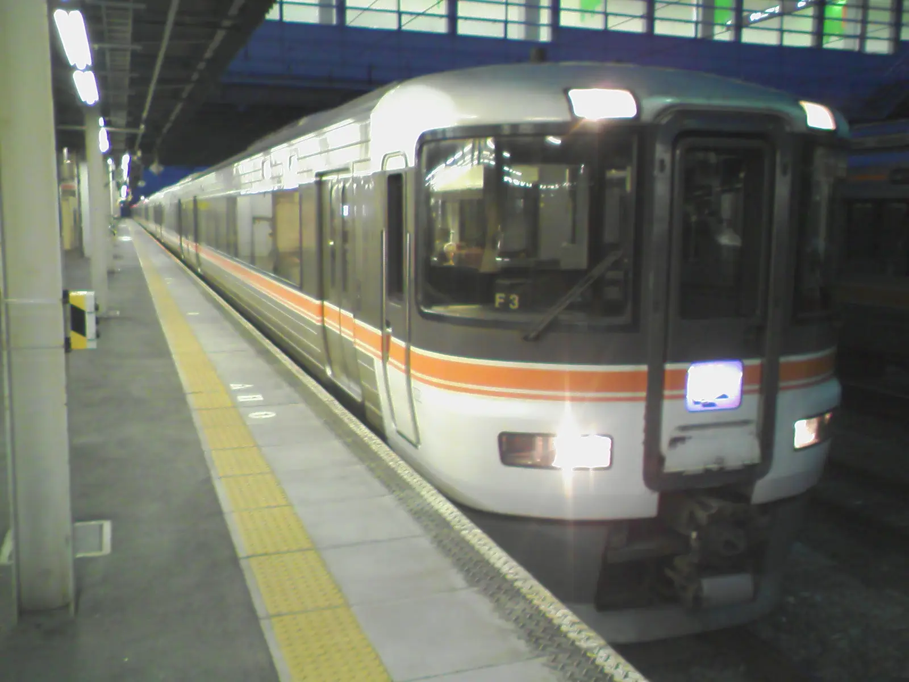
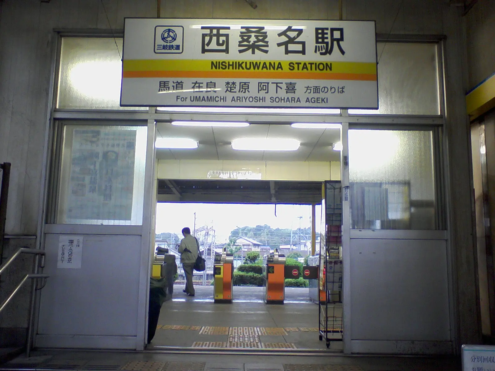
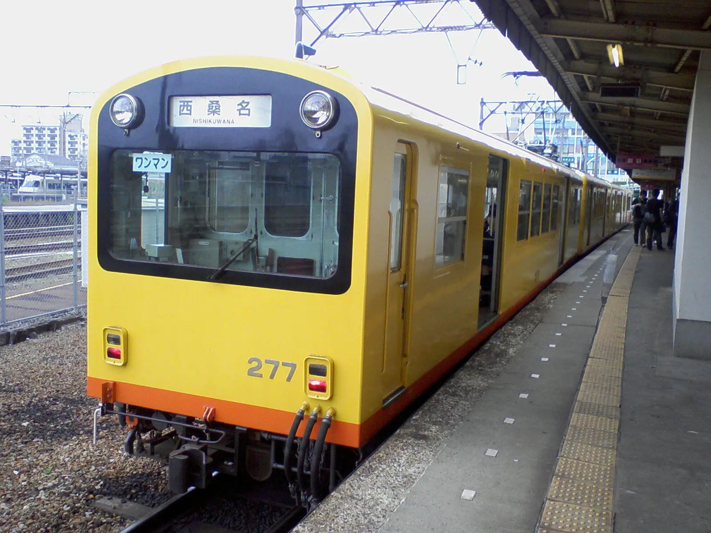
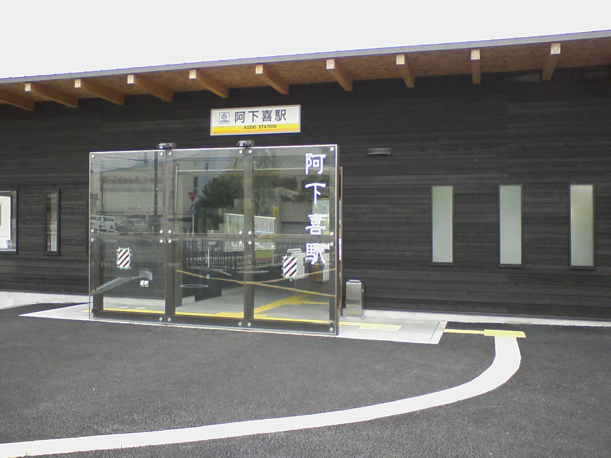
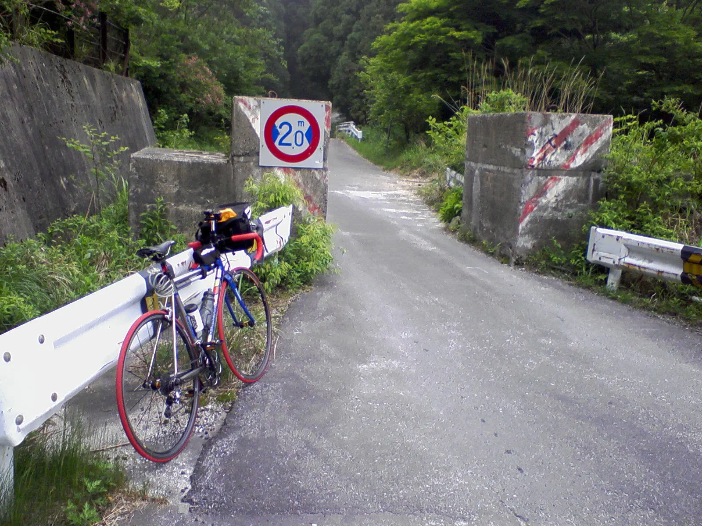
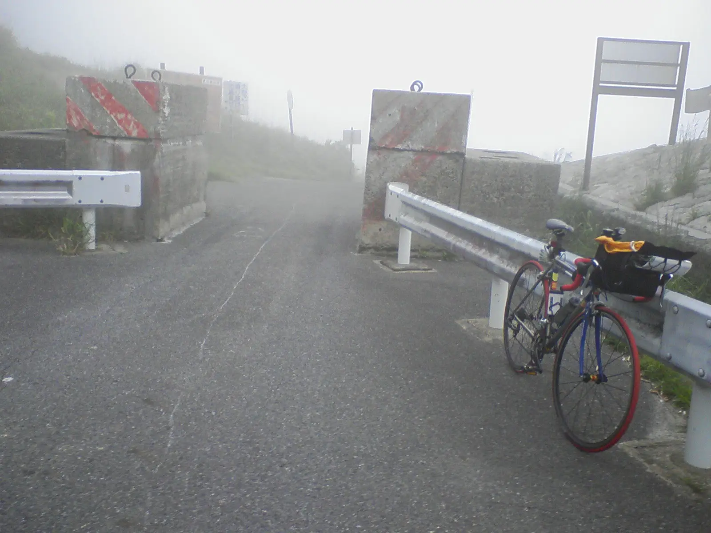
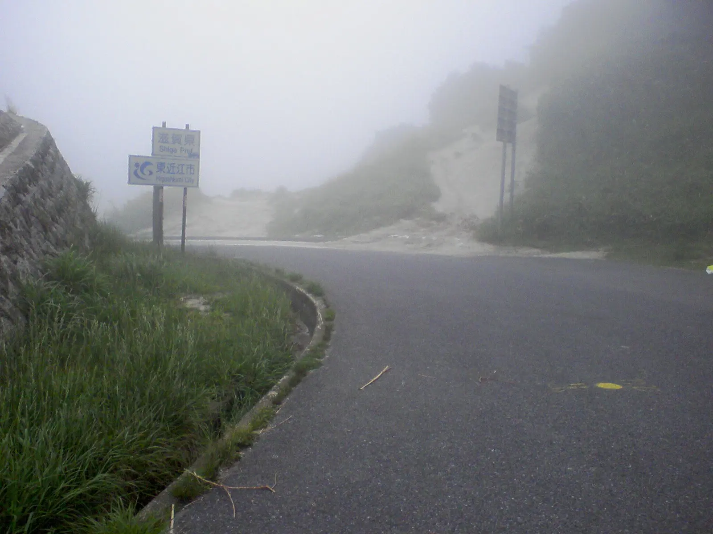

2008年6月2日 石榑峠（旧道時代）三重県・滋賀県自転車ツーリング
2008年6月、大学の学部の専攻で奈良の仏像を見にいく旅行があったので、その前乗りで三重・滋賀県境の石榑峠（いしぐれとうげ）を走った。
石榑峠は2011年にトンネルが開通し、このとき走った旧道は廃道となったらしい。
使用カメラはガラケー。
学割の乗車券で定期ムーンライトながらに乗って出発。この写真は豊橋駅だろうか？
名古屋で降りて関西本線に乗り換え。桑名で降りて、西桑名駅から三岐鉄道北勢線に乗った。
西桑名駅にて。三岐鉄道北勢線277号。
終点の阿下喜駅まで乗り通した。
阿下喜駅から出発。国道421号線を石榑峠へ上っていく。峠の直前にゲートがあり、車幅の広い車をブロックしている。ここから急に斜度もきつくなった。
峠側ゲート。石榑峠に着いた。石榑峠は標高690m。坂道は急だったが、まだまだ体ができていたのでとくにきつくはなかった。このPanasonicのチタンロードバイクは、フロント34T-リア25T。
石榑峠で滋賀県側を望む。すでに平成の大合併で東近江市になっている
このあとたしか草津まで自走して輪行した気がする。その後、翌日から大学の専攻の合宿に合流した。
おわり。
2026年1月20日記事公開